authors
- erjohnso
- supertom
maintainers
- supertom
contributors
- erjohnso : 67 commits
- supertom : 13 commits
- franckcuny : 13 commits
- jbaublitz : 11 commits
- gillesgagniard : 11 commits
- curious-eyes : 10 commits
- abadger : 10 commits
- nabam : 9 commits
- clconway : 9 commits
- viglesiasce : 8 commits
- daniel-sc : 6 commits
- tstimalkemade : 5 commits
- rmarsagoogle : 5 commits
- mpdehaan : 4 commits
- bcoca : 4 commits
- jctanner : 2 commits
- andmarios : 2 commits
- risaacson : 1 commits
- jimi-c : 1 commits
- Hypermanzer : 1 commits
total issue counts
unknown: 1
bugfix pull request: 38
docs report: 4
pullrequest: 89
docs pull request: 5
feature pull request: 45
feature idea: 11
issue: 35
bug report: 20
issue history
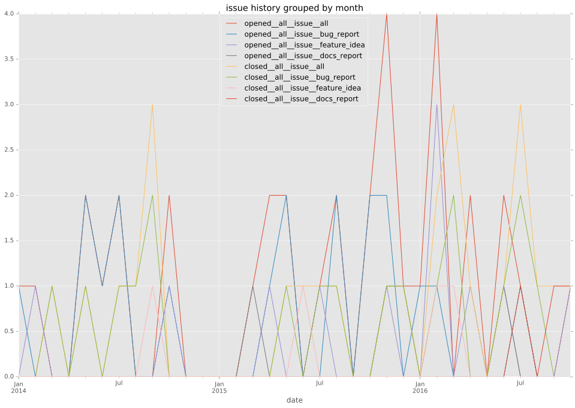
pullrequest history
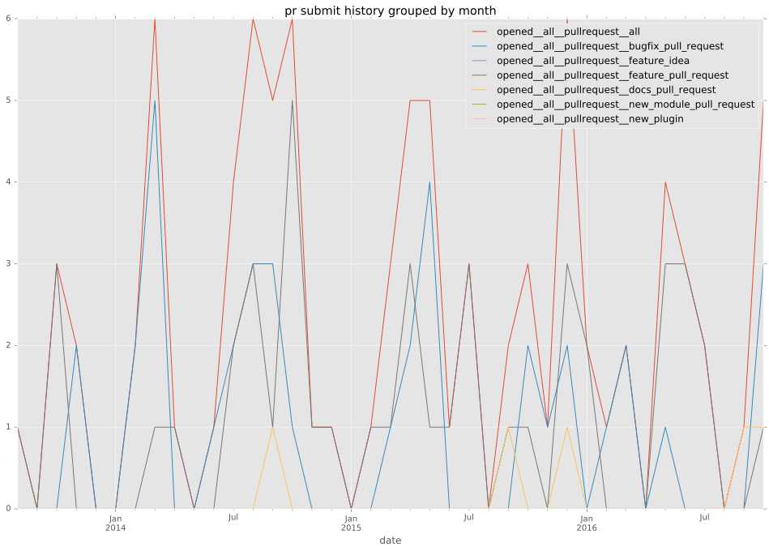
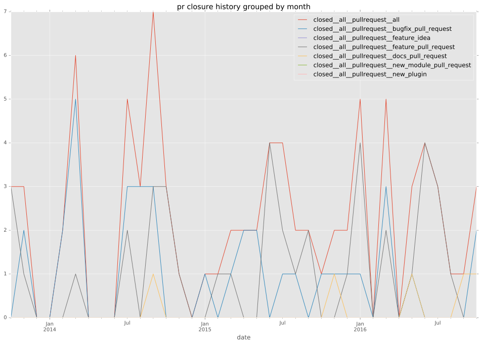
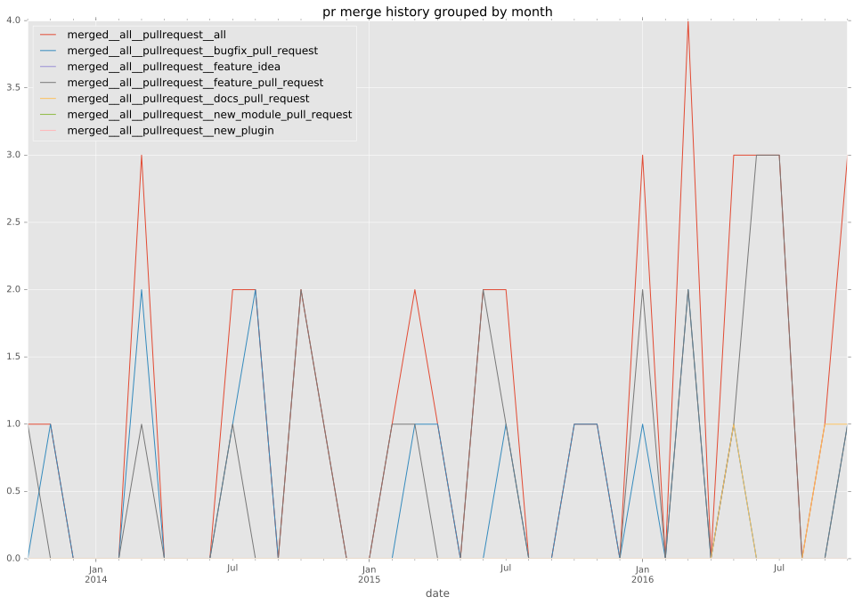
days open by issue type
feature pull request
count: 65
std: 117.672837285
min: 0
max: 765
median: 21.0
mean: 71.3846153846
all
count: 152
std: 108.980535226
min: 0
max: 765
median: 6.0
mean: 58.6052631579
pullrequest
count: 0
std: nan
min: nan
max: nan
median: nan
mean: nan
docs pull request
count: 8
std: 63.405159772
min: 0
max: 142
median: 6.5
mean: 46.75
docs report
count: 3
std: 258.720569985
min: 54
max: 571
median: 294.0
mean: 306.333333333
bugfix pull request
count: 52
std: 23.8066859438
min: 0
max: 110
median: 0.0
mean: 9.71153846154
feature idea
count: 4
std: 118.868274433
min: 0
max: 265
median: 174.5
mean: 153.5
issue
count: 0
std: nan
min: nan
max: nan
median: nan
mean: nan
bug report
count: 19
std: 125.929085214
min: 0
max: 455
median: 53.0
mean: 97.6315789474
closures grouped by total days open
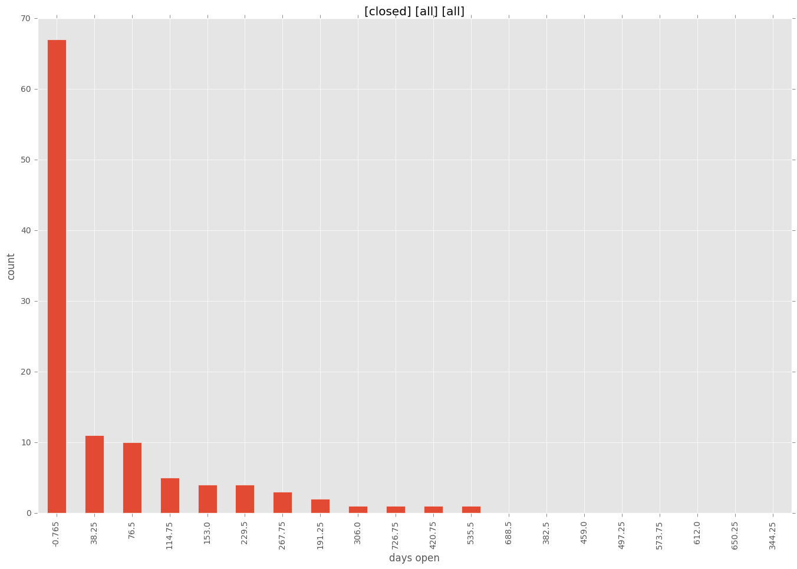
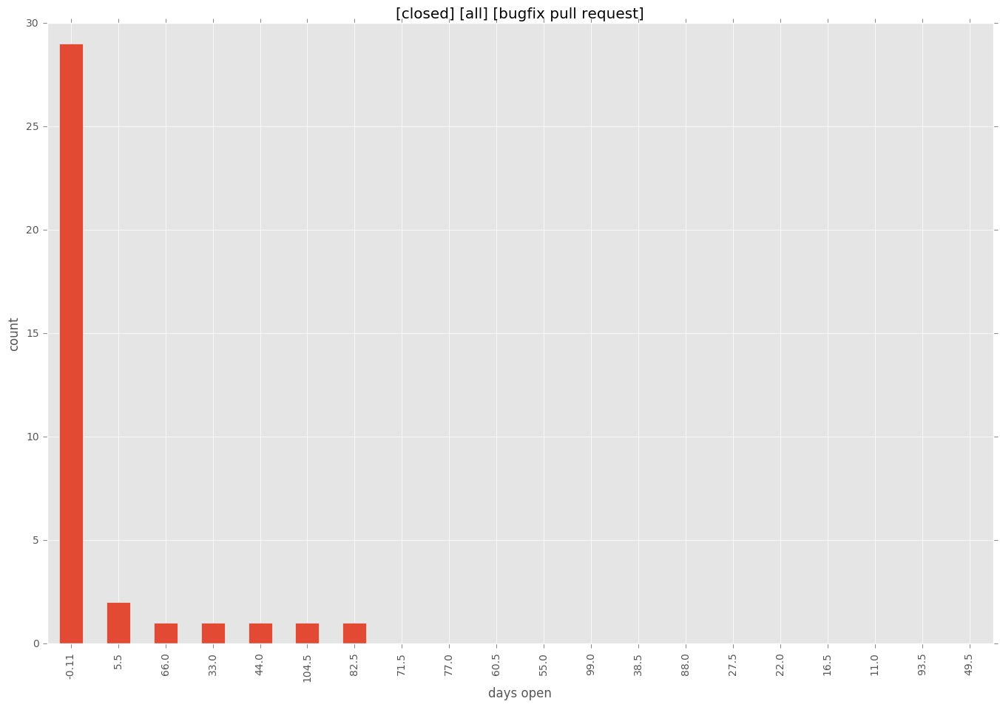
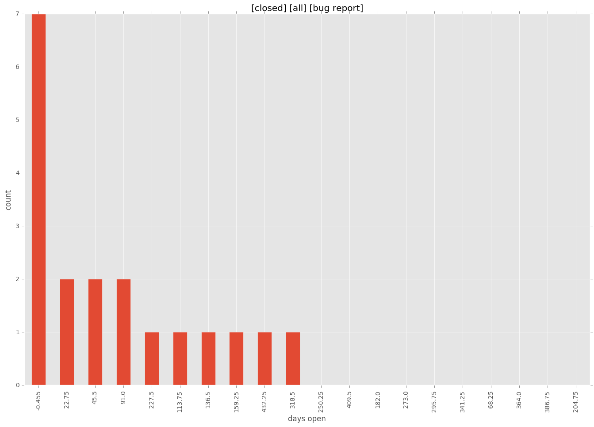
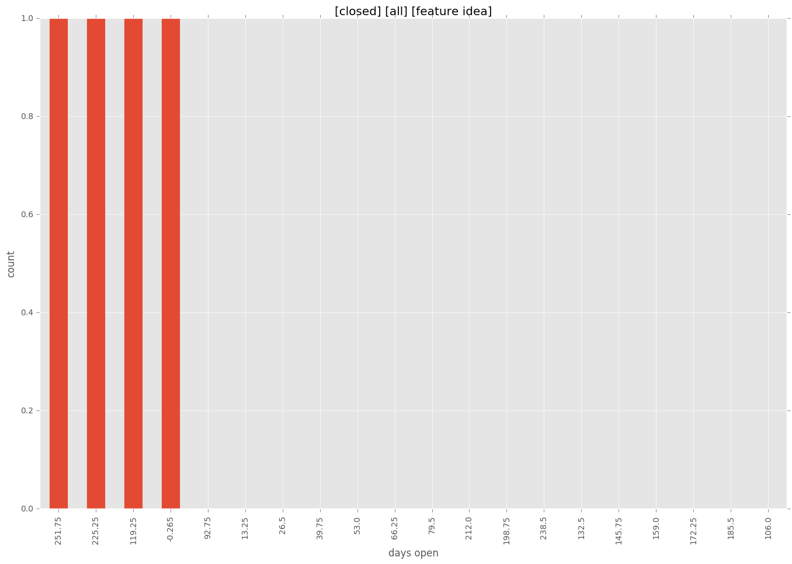
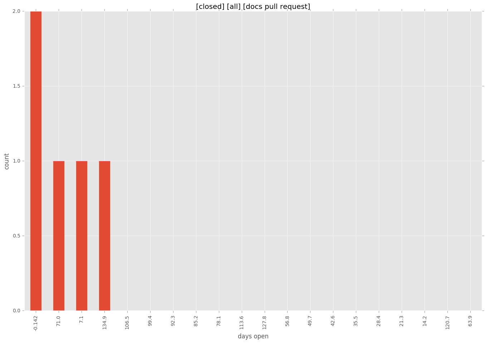
 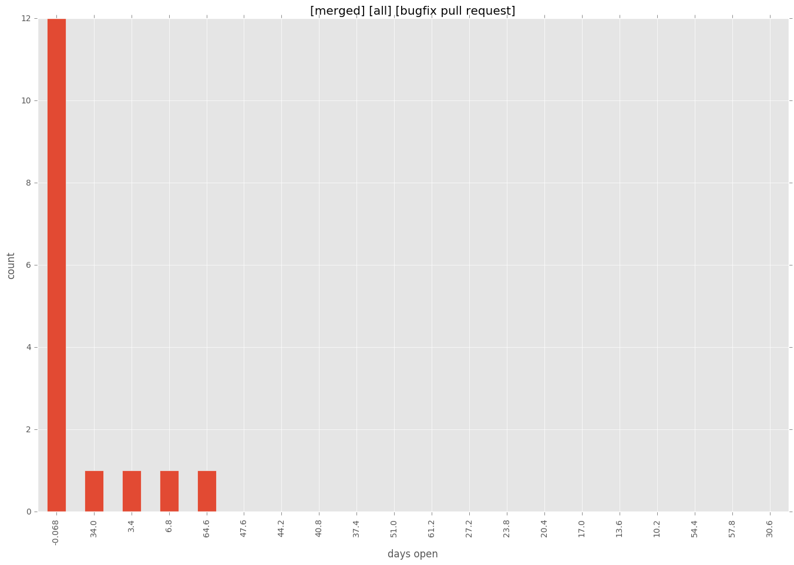
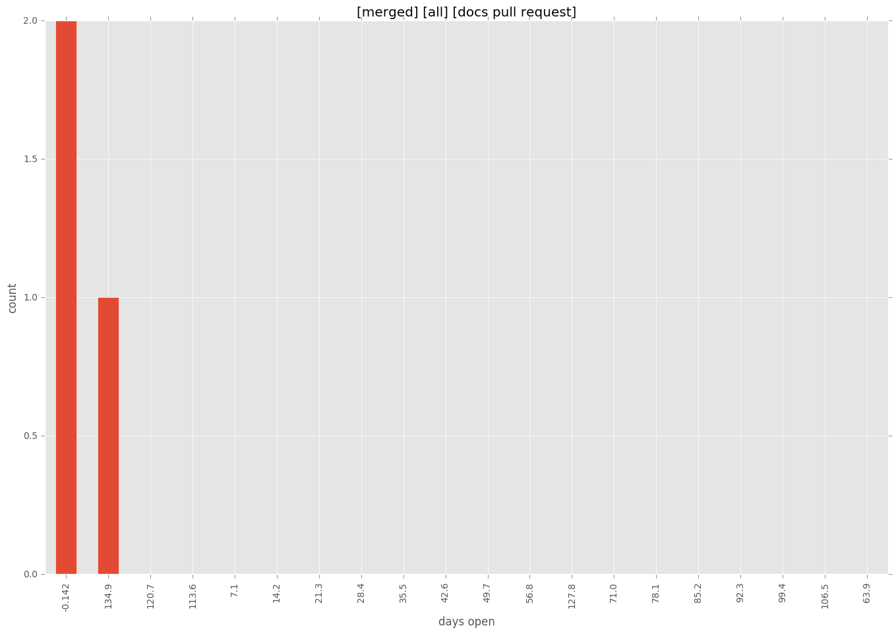
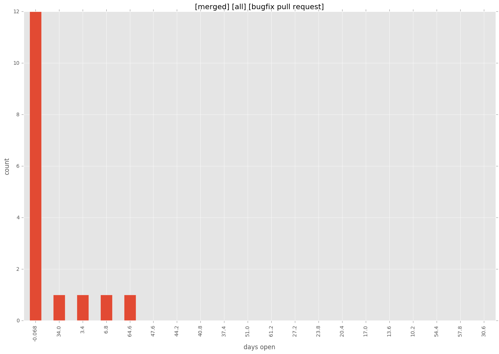
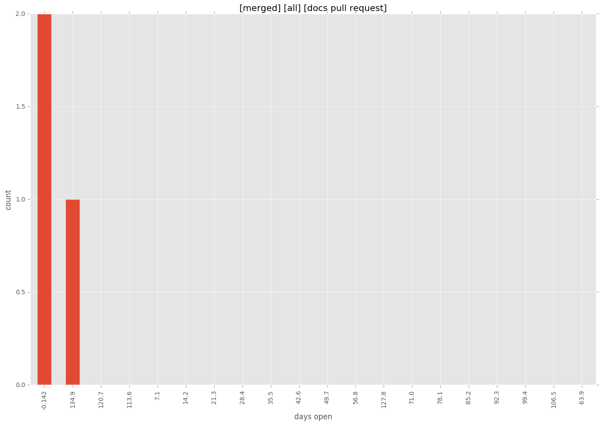